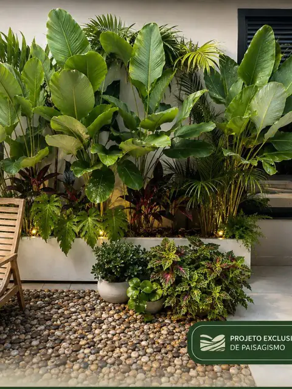

Onde atendemos
Paisagismo em Uberlândia e região.
Projeto, execução com equipe própria e manutenção contínua em Uberlândia e no Triângulo Mineiro — com o mesmo padrão de projeto e de acabamento.

O que muda no paisagismo aqui
Uberlândia está no Cerrado, e isso define o projeto muito mais do que a maioria das pessoas imagina. As duas características que pesam:
- Seca longa e marcada. A estiagem do meio do ano, com umidade do ar muito baixa, é o período que mata jardim recém-plantado. Aqui a irrigação não é um item opcional do orçamento — é o que decide se o investimento sobrevive ao primeiro ano.
- Solo do Cerrado. Tipicamente ácido e pobre em nutrientes disponíveis. Sem correção e incorporação de matéria orgânica, a planta fica estagnada mesmo bem regada.
Por isso, em projetos da região, preparo de solo e irrigação concentram uma parcela maior do orçamento do que em regiões mais úmidas — e é dinheiro que volta, porque evita replantar.
Espécies que lidam bem com a seca
Espécie adaptada ao clima local reduz consumo de água, adubação e manutenção pelo resto da vida do jardim. Vegetação de Cerrado e espécies de clima seco costumam entregar mais resultado por real investido do que espécie de mata úmida forçada a viver aqui — que é o erro mais comum e mais caro na região.
A definição das espécies sai no projeto, depois de medir a insolação e avaliar o solo do seu terreno.
Para quem trabalhamos na região
- Residências — jardim de entrada, área de piscina, quintal e varanda.
- Condomínios — áreas comuns, portaria e praças, com contrato mensal e relatório de visita.
- Empresas e indústrias — fachada, recepção e áreas de convivência.
- Chácaras e sítios — arborização, pomar ornamental e recuperação de gramado em grandes áreas.
Cidades atendidas
Atendemos com equipe deslocada para a obra nas seguintes cidades:
- Uberlândia
- Uberaba
- Araguari
- Araxá
- Patos de Minas
- Monte Alegre de Minas
- Tupaciguara
- Indianópolis
Não achou a sua cidade? Para obras maiores avaliamos deslocamento para municípios vizinhos. Mande a localização no WhatsApp que confirmamos na hora.
Quer um orçamento em Uberlândia?
Mande uma foto do seu jardim, quintal, varanda ou área comum. Em poucos minutos te dizemos o que dá para fazer — e quanto custa.
Quero meu orçamento grátisServiços disponíveis na região
O que fazemos em Uberlândia.
Projeto de Paisagismo
Projeto exclusivo para o seu espaço: conceito, distribuição de canteiros, lista de espécies, iluminação e acabamentos.
Ver mais →Execução & Plantio
Preparo e correção de solo, drenagem, irrigação, plantio e acabamento. Executamos o que projetamos — sem terceirizar a mão de obra.
Ver mais →Manutenção de Jardins
Visitas programadas com poda técnica, adubação, controle fitossanitário, replantio pontual e limpeza. Contrato mensal ou avulso.
Ver mais →Jardins Verticais
Verde onde não existe chão. Painéis naturais ou preservados para fachadas, muros, halls e ambientes internos.
Ver mais →Grama & Gramados
Formação, troca e recuperação de gramado com nivelamento e preparo de base — para o tapete ficar uniforme e durar.
Ver mais →Vasos, Kokedamas & Terrários
Árvores adaptadas em vaso — jabuticabeira, oliveira, caliandra, hibisco trançado — além de kokedamas e terrários sob encomenda.
Ver mais →Dúvidas frequentes